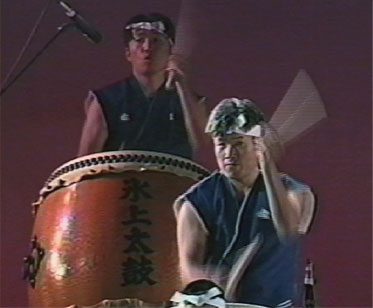
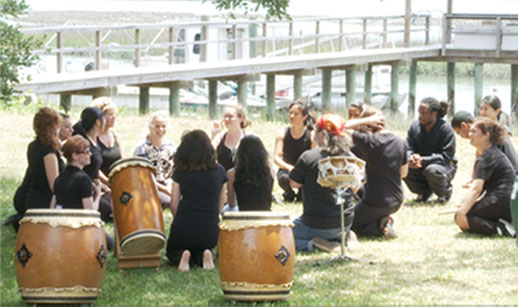

About Taiko Charleston

Since 2009, when the first group of student drummers gathered under the direction of Tracy Bush, a diverse group of members have come together within Taiko Charleston and close friendships have developed. As Taiko has taken off in Charleston, it has been rewarding to keep up with the interest within the community and numerous requests for performances, workshops and artistic collaboration.
Taiko Charleston seeks to honor the spirit of joy grounded in a practice of discipline and the innovation arising from respect for tradition this art form exemplifies. With heart, soul, and an abiding commitment to mastery, we seek to keep our performances evolving, fresh, heartfelt and powerful – to consistently inspire and uplift through our drumming.

- TaikoCharleston@gmail.com
- #843.345.7359
 Visit!
Visit!- Join Our Mailing List